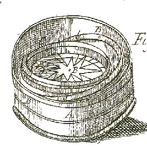

co-taught by: Elisa Beshero-Bondar and Gregory Bondar
Work together with your professors as we build a definitive online resource on 18th-century Pacific voyages, "first contact" between Pacific and European peoples, and its cultural impact documented in English print media. Your professors began this work last year with Digital Archives and Pacific Cultures, and the site is now moving to its new Pitt-Greensburg home. This semester we will be working on adding new voyage accounts to the site, and on compiling and analyzing more literary and media texts that respond to these voyage accounts. We will also concentrate on enhancing our mapping tools, building on what we started with KML (Keyhole Markup Language) for Google Earth.
In the process of this, you'll be learning and applying computer methods, modeling, and programming with a foundation in eXtensible Markup Language (XML), a standard international system for storing and accessing information that is in widespread use now (underlying the structure of Microsoft Office, for example). XML is independent of proprietary software applications and is exchangeable between computers across platforms. It outlasts software obsolescence, and it's important for archiving information as well as for designing resources for publication on the world-wide web. Because HTML (the common code underlying web pages) is a presentation or publication form of XML, we'll learn some web development skills along the way, including how to transform texts and data stored in XML formats into HTML, as well as other markup forms, like the KML we mentioned above for digital mapping.
Classes: Expect to attend every day of class. ANY absence will put you severely behind, as one day’s work builds on the material covered the previous day. During class, we will be working online practicing the skills needed for the homework assignments and group projects. We encourage you to ask questions and participate helpfully in class discussion (see Discussion Boards & Participation below).
Homework Exercises (35%): To aid you in practicing the techniques we will introduce in class, there will be weekly coding and/or response paper assignments:
Quizzes & Tests (15%): There will be at least four very short (10-20 minute) tests asking you to demonstrate your skills developed in that section of the course, with only the best three tests counting towards the course grade (but no make-ups will be given).
Projects (35%): Part of our goal in this course is to continue to develop material for the Digital Pacific website. As the semester progresses, several larger-scale areas of research will be assigned to groups of students for longer-term analysis and more in-depth reporting.
Discussion Boards & Participation (15%): We expect this course to be a voyage of discovery for both students and instructors! Thoughts about class subjects and assignments are best shared, both in class and on the Discussion boards on CourseWeb. If you are wrestling with a coding problem, especially, your classmates may be able to provide helpful hints and explanations, though you should not be posting your perfected homework answers for others to copy. We will be expecting at least ten postings (counting only 1 per week) from each student for the semester, and equivalent participation in class.
Our course's central topic concentrates our activities on digitized primary resources of European first contact with Polynesian peoples in the middle of the eighteenth century, during the voyages of French and English Captains Wallis, Bougainville, and James Cook. The documentation of these voyages involved an investigation of horizons in knowledge, sparking in its way an information revolution akin to our own in the computer age. Pacific explorations were dedicated to improving maps of the Earth, and contributed to the modern ways we imagine and virtually model "the globe" and "the global." Cook's voyages experimented with new equipment and methods to refine measurements of longitude--using a chronometer together with sextants and compasses--to record positions with increasing precision and resulting in the first detailed maps of Australia and the Antarctic coastline. The voyagers also studied celestial phenomena like the Transit of Venus, as well as many unfamiliar species: the first records of kangaroos and wombats among many others.
The Pacific voyage records--and the media responses to their publication--are extensive and difficult for solitary researchers to read and study coherently. We aim with our long-term project to find efficent, collaborative computational methods to navigate these extensive oceanic records of the past. Below is an example of some of our most recent efforts to do just that--coding with KML for Google Earth.
Note: The KML viewer marks the voyage route plotted from coordinates recorded in Captain Cook's account of his second voyage from 1772-1775.Click on the KML viewer to zoom in, and click on the red compass rose points to view the paragraph from Cook's account surrounding the record of each pair of latitude and longitude coordinates. **The occasionally tangled trajectory of Cook's Second Voyage marked here in KML will require some modification as we continue to study this voyage account and correlate paragraphs with dates where these are unclear--We'll be working on this, and other experiments with coding and mapping this semester.
(A collection of helpful resources for our course development)
Source Citation and Plagiarism: One goal of our course is to reflect on how best to cite sources in digital contexts. We will consider how and why such citations differ from documenting printed texts. We will also consider the ease and frequency with which digital texts and graphics are plagiarized on the worldwide web, and discuss how the omission of source citations detracts from the authority of a digital information resource. We expect you to practice mindful source citation, and plagiarism on your part will have very serious consequences.
Plagiarism falsely represents another source’s words or ideas as your own, and, if you commit plagiarism in this course, you will receive a final course grade of F and be reported to the Vice President of Academic Affairs. Representing the voice of another individual as your own voice constitutes plagiarism, however generous that person may be in “helping” you with an assignment. Turning in an assignment generated collectively under the name of a single individual is considered plagiarism. When instructed to collaborate on a project, project collaborators share collective authorship and should identify themselves directly as a team. To avoid plagiarism, cite your sources whenever you quote, paraphrase, or summarize material, or use digital images from any outside source (including websites, articles, books, course readings, Courseweb postings, or someone else’s notes). When using the “copy” and “paste” features as you read and research, be sure that you are carefully marking that these passages are unprocessed from their source, so that you know to process it later. Forgetting to do so not only produces sloppy work but (whether you intended it or not) results in a false representation. As long as you make a good faith and clear effort to cite your sources, you will not be faulted for plagiarism, but your work will be penalized if citations are inaccurate, unclear, or lack important information. Cheating on exams or exercises will also receive a final course grade of F and will be reported to the Vice President of Academic Affairs.
Learning Resources Center: To help you brush up on your study skills outside of class, Pitt-Greensburg has a Learning Resources Center (FOB 104, 105) that offers free tutoring, drop-in help for composition, information and handouts about study skills and test taking, a variety of software, and disability services for those who qualify. If you have a disability for which you are or may be requesting an accommodation, you are encouraged to contact both your instructor and the Director of Learning Resources Center, Dr. Lou Ann Sears, 240 Millstein Library Building (724) 836-7098 voice or (724) 836-7128 TTY as early as possible in the term. Learning Resources Center will verify your disability and determine reasonable accommodations for this course.
Elisa and Gregory Bondar are a married pair of scholars who have been travelling and thinking and talking to each other incessantly since the 1990s. Greg maintains an archive on the Soviet N-1 Moon Rocket among other intriguing pages.
Our Projects:
Greg and Elisa on a spectacular night hike surrounded by flowing lava at Pu'u O'o on the "Big Island" of Hawaii.